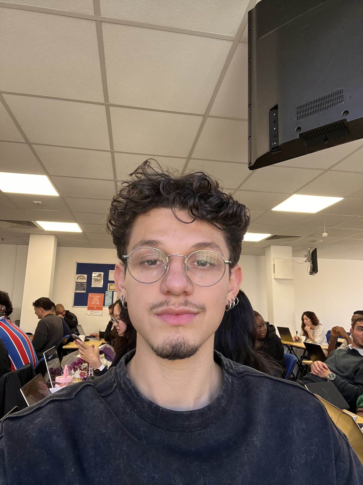

Computer Science & IT Student | Software Development & Cloud Enthusiast
I am a dedicated Computer Science and IT student, passing my 3rd year at CCT College Dublin, I am passionated about new technologies, software development, networking, and cloud computing. I have experience developing applications using Java, Python, React, and Electron, as well as working with virtualized environments and cloud platforms such as AWS. My background includes over a year of professional experience at Viasat, I worked as a Technical support agent, supporting customers and solved complex technical issues in satellite internet systems. I am seeking an internship opportunity where I can apply my technical knowledge, grow within a collaborative environment, and contribute to innovative technology projects.
Interactive desktop & mobile app built using Electron and React Native to practice UI and API integration.
View on GitHub →Python system simulating concurrent operations across distributed nodes, exploring system reliability.
View on GitHub →📧 sebaslopez086@icloud.com
📞 087 933 8266